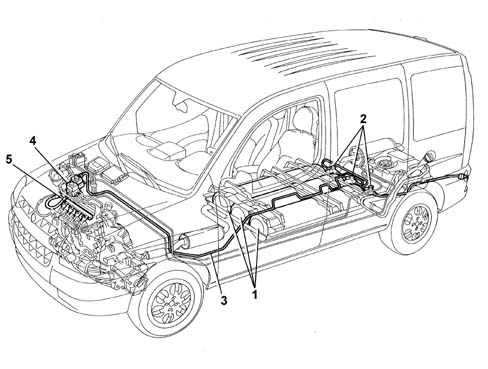
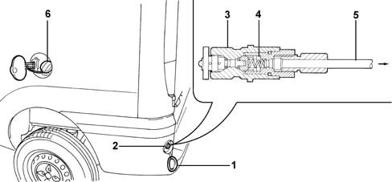
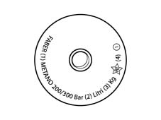
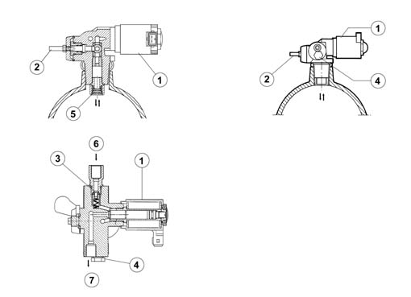
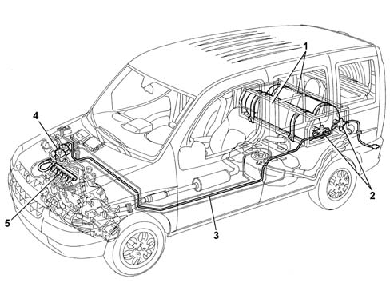

1042A methane gas cannister and tubes for re-charging
- Path
- Descriptions > 10 ENGINE > 1042 (METHANE) CNG CANISTER AND PIPES > 1042A methane gas cannister and tubes for re-charging
- Kind
- system description
- Applies to
- all engines; all production periods; only with equipment: BIPOWER
- Interactive page
- https://sloeber94.github.io/elrnDB-fDbl/en/#/2582318
Applies to: all engines; all production periods; only with equipment: Cargo trim level and BIPOWER
The methane (or CNG) is stored, compressed at a pressure of 200 bar, in three red cylinders, located under the floor of the vehicle and protected by a cover; the cylinders are filled through a specific filler, fitted with a check valve.
A solenoid valve, on each cylinder, cuts off the flow of methane to the supply system when the engine is not running.
The methane at high pressure, passes through a pipe and reaches the two stage pressure reduction unit where the pressure is reduced to a constant value of 9 ± 1 bar.
The methane is directed from the pressure reduction unit to the methane distribution manifold to which the special injectors are connected, each of which injects the methane into the intake manifold for each cylinder, upstream of the inlet valves.
The specific components for the methane fuel system are:
- methane pressure sensor on high pressure line;
- methane injectors.

1 Methane cylinders 2, Solenoids on cylinders 3, Methane pipes 4, Methane pressure adaptor 5, Methane/injector manifold
Applies to: all engines; all production periods; only with equipment: Cargo trim level and BIPOWER
METHANE FILLER
The methane filler (2) protected by a specific cap is located on the left upright of the rear bumper under a specific cover (1). The petrol filler (6) is on the same side.
The methane filler has a check valve (4) in the filler casing (3), connected by a high-pressure pipe (5) to the cylinders.

Applies to: all engines; all production periods; only with equipment: Cargo trim level and BIPOWER
METHANE CYLINDERS
The methane in a gaseous state is compressed at a nominal operating pressure of 200 bar at 15° C, in the cylinders located under the floor of the vehicle. Their capacity is 111 litres. After pressurizing, the methane inside the cylinder always remains in a gaseous state.
The cylinder is entirely steel (as per standards), and by law is subjected to a hydraulic test at a pressure of 300 bar.
Each methane cylinder is identified in the factory by a stamp on the ogive of the cylinder.
This stamp states:
- name of cylinder's manufacturer;
- registration number;
- type of gas for which it is intended (methane);
- nominal working pressure (200 bar) and hydraulic test pressure (300 bar);
- capacity of the cylinder in litres;
- weight of the cylinder in kg (specific for each cylinder);
- Italian Republic emblem;
- cylinder test date (month/year).

Applies to: all engines; all production periods; only with equipment: Cargo trim level and BIPOWER
VALVE ASSEMBLY ON cylinder
The valve assembly consists of:
- 1, Normally closed type cut out solenoid valve (if it is not activated, it prevents the methane flowing from the cylinder to the engine)
- Manual cut-out valve (2) (cock which prevents the methane in the cylinder from escaping)
- Check valve (3) (prevents the methane flowing from the solenoid valve to the filler)
- Fuse pad (4) (melting temperature 110 ± 10° C: it allows the escape of methane from the cylinder in the case of fire)
- Flow restricter (5) (limits the flow of methane which escapes from the cylilnder if the high pressure pipe breaks)
- Valve assembly inlet (6) connected, by means of a high pressure pipe, to the methane filler (allowing the intake of methane whilst the cylinder is refilling, but not the flow of methane on account of the presence of the check valve).
- Valve assembly outlet (7) connected, by means of a high pressure pipe, to the pressure reduction unit in the engine compartment (allowing methane to come out to supply the engine, cut off by the solenoid valve)

Applies to: all engines; all production periods; only with equipment: Cargo trim level and BIPOWER
SOLENOID
The solenoid valve (1a), fitted directly on the valve assembly, has the main task of managing the flow of methane coming out of the cylinder, shuttering the outlet duct from the valve assembly.
The intake duct, on the other hand, is fitted with a check valve (3), which prevents the flow of methane from the cylinder to the filler (to increase safety, a second check valve is fitted in the filler).
Each solenoid valve is electrically supplied by the ignition key by means of a specific relay and is earthed via the inertia switch.
With the solenoid valve de-energized (engine switched off) the path towards the pressure reduction unit is closed and the methane can be refilled.
With the solenoid valve energized (ignition key in ON position) the path towards the pressure reduction unit is opened, placing the cylinder in contact with the engine fuel system.
The flow of methane towards the outside is prevented by the check valve (3).
Applies to: all engines; all production periods; only with equipment: Cargo trim level and BIPOWER
MANUAL CUT-OFF VALVE (COCK)
The valve assembly is fitted with a manual methane cut-out cock (2) located upstream of the solenoid valve (1). Opening/closing it either allows or prevents the exit or entry of methane from the cylinder and it is important for the maintenance of the system.
Applies to: all engines; all production periods; only with equipment: Cargo trim level and BIPOWER
CHECK VALVE
The check valve (3) is fitted in the methane intake manifold for the valve assembly and is designed to prevent the flow of methane from the solenoid valve to the filler (to increase safety, a second check valve is fitted in the actual filler).
Applies to: all engines; all production periods; only with equipment: Cargo trim level and BIPOWER
SAFETY DEVICES
To prevent excess pressure or fast draining of the cylinder, the valve assembly is equipped with the following safety devices:
- fuse tablet (4)
- flow restricter (5).
Fuse tablet
If, as a result of external causes, the temperature increases to above 110 ± 10° C (for example, in the case of fire), the tablet (4) melts, causing the escape of the methane in the cylinder through a calibrated port, completely preventing the danger of excess pressure.
Flow restricter
If one of the pipes of the valve assembly breaks (for example in the case of an impact) this would cause the escape of the excess methane (gas leak) and the flow restricter (5) would intervene limiting the flow of methane to around 0.5% in relation to the setting for normal operation, thereby preventing the danger stemming from the presence of a considerable methane flow rate.
The flow restricter is located on the valve assembly threaded shank in order to remain inside the cylinder guaranteeing operation even if the solenoid valve breaks due to impact.
Applies to: all engines; all production periods; only with equipment: Cargo trim level and BIPOWER
OPERATION
The valve assembly is fitted directly on the cylinders and has been designed to carry out the following functions:
- methane cylinder refilling
- engine supply
Cylinder refilling
During refilling, the methane under pressure (200 bar), reaches the intake (6) and overcomes the check valve (3).
With the engine switched off, the solenoid valve (1) is de-energized: the outlet (7) towards the engine is closed, whilst the passage (6) from the filler to the cylinder is open, allowing the refilling of the actual cylinder.
Engine supply
With the engine running on methane, the solenoid valve (1) is energized: the passage (7) from the cylinder to the pressure reduction unit is open, allowing the supply to the engine.
Applies to: all engines; all production periods; only with equipment: Doblò trim level and BIPOWER
The methane (or CNG) is stored, compressed at a pressure of 200 bar, in two red cylinders, located in the load compartment and protected by a specific metal structure covered with carpet trim; the cylinders are filled through a specific filler, fitted with check valve.
A solenoid valve, on each cylinder, cuts off the flow of methane to the supply system when the engine is not running.
The methane at high pressure, passes through a pipe and reaches the two stage pressure reduction unit where the pressure is reduced to a constant value of 9 ± 1 bar.
The methane is directed from the pressure reduction unit to the methane distribution manifold to which the special injectors are connected, each of which injects the methane into the intake manifold for each cylinder, upstream of the inlet valves.
The specific components for the methane fuel system are:
- methane pressure sensor on high pressure line;
- methane injectors.

1 Methane cylinders 2, Solenoids on cylinders 3, Methane pipes 4, Methane pressure adaptor 5, Methane/injector manifold
Applies to: all engines; all production periods; only with equipment: Doblò trim level and BIPOWER
METHANE FILLER
The methane filler (2) protected by a cap, is located on the left upright of the rear bumper under a cover (1). The petrol filler (6) is on the same side.
The methane filler is fitted with a check valve (4) inserted in the filler casing (3), connected via a high-pressure pipe (6) to the cylinders.
Applies to: all engines; all production periods; only with equipment: Doblò trim level and BIPOWER
METHANE cylinderS
The methane in a gaseous state is compressed at a nominal operating pressure of 200 bar at 15° C, in the cylinders located in the load compartment. Their capacity is 126 litres. After pressurizing, the methane inside the cylinder always remains in a gaseous state.
The cylinder is entirely steel (as per standards), and by law is subjected to a hydraulic test at a pressure of 300 bar.
Each methane cylinder is identified in the factory with a stamp on the ogive of the cylinder.
This stamp states:
- name of the cylinder manufacaturer;
- registration number;
- type of gas for which it is intended (methane);
- nominal operating pressure (200 bar) and hydraulic test pressure (300 bar);
- capacity of the cylinder in litres;
- weight of the cylilnder in kg (specific for each cylinder);
- Italian Republic emblem;
- cylinder test date (month/year).
Applies to: all engines; all production periods; only with equipment: Doblò trim level and BIPOWER
VALVE ASSEMBLY ON cylinder
The valve assembly consists of:
- 1, Normally closed type cut out solenoid valve (if it is not activated, it prevents the methane flowing from the cylinder to the engine)
- Manual cut-out valve (2) (cock which prevents the methane in the cylinder from escaping)
- Check valve (3) (prevents the methane flowing from the solenoid valve to the filler)
- Fuse pad (4) (melting temperature 110 ± 10° C: it allows the escape of methane from the cylinder in the case of fire)
- Flow restricter (5) (limits the flow of methane which escapes from the cylinder if the high pressure pipe breaks)
- Valve assembly inlet (6) connected, by means of a high pressure pipe, to the methane filler (allowing the intake of methane whilst the cylinder is refilling, but not the flow of methane on account of the presence of a check valve).
- Valve assembly outlet (7) connected, by means of a high pressure pipe, to the pressure reduction unit in the engine compartment (allowing the exit of methane to supply the engine, cut off by the solenoid valve)
Applies to: all engines; all production periods; only with equipment: Doblò trim level and BIPOWER
SOLENOID
The solenoid valve (1a), fitted directly on the valve assembly, has the main task of managing the flow of methane coming out of the cylinder, shuttering the outlet duct from the valve assembly.
The intake duct, on the other hand, is fitted with a check valve (3), which prevents the flow of methane from the cylinder to the filler (to increase safety, a second check valve is fitted in the filler).
Each solenoid valve is electrically supplied by the ignition key by means of a specific relay and is earthed via the inertia switch.
With the solenoid valve de-energized (engine switched off) the path towards the pressure reduction unit is closed and the methane can be refilled.
With the solenoid valve energized (ignition key in ON position) the path towards the pressure reduction unit is opened, placing the cylilnder in contact with the engine fuel system.
The flow of methane towards the outside is prevented by the check valve (3).
Applies to: all engines; all production periods; only with equipment: Doblò trim level and BIPOWER
MANUAL CUT-OFF VALVE (COCK)
The valve assembly is fitted with a manual methane cut-out cock (2) located upstream of the solenoid valve (1). Opening/closing it either allows or prevents the exit or entry of methane from the cylinder and it is important for the maintenance of the system.
Applies to: all engines; all production periods; only with equipment: Doblò trim level and BIPOWER
CHECK VALVE
The check valve (3) is fitted in the methane intake manifold for the valve assembly and is designed to prevent the flow of methane from the solenoid valve to the filler (to increase safety, a second check valve is fitted in the filler).
Applies to: all engines; all production periods; only with equipment: Doblò trim level and BIPOWER
SAFETY DEVICES
To prevent excess pressure or fast draining of the cylinder, the valve assembly is equipped with the following safety devices:
- fuse tablet (4)
- flow restricter (5).
Fuse tablet
If, as a result of external causes, the temperature increases to above 110 ± 10° C (for example, in the case of fire), the tablet (4) melts, causing the escape of the methane in the cylinder through a calibrated port, completely preventing the danger of excess pressure.
Flow restricter
If one of the pipes of the valve assembly breaks (for example in the case of an impact) this would cause the escape of the excess methane (gas leak) and the flow restricter (5) would intervene limiting the flow of methane to around 0.5% in relation to the setting for normal operation, thereby preventing the danger stemming from the presence of a considerable methane flow rate.
The flow restricter is located on the valve assembly threaded shank in order to remain inside the cylinder guaranteeing operation even if the solenoid valve breaks due to impact.
Applies to: all engines; all production periods; only with equipment: Doblò trim level and BIPOWER
OPERATION
The valve assembly is fitted directly on the cylinders and has been designed to carry out the following functions:
- methane cylinder refilling
- engine supply
cylinder refilling
During refilling, the methane under pressure (200 bar), reaches the intake (6) and overcomes the check valve (3).
With the engine switched off, the solenoid valve (1) is de-energized: the outlet (7) towards the engine is closed, whilst the passage (6) from the filler to the cylinder is open, allowing the refilling of the cylinder.
Engine supply
With the engine running on methane, the solenoid valve (1) is energized: the passage (7) from the cylinder to the pressure reduction unit is open, allowing the supply to the engine.